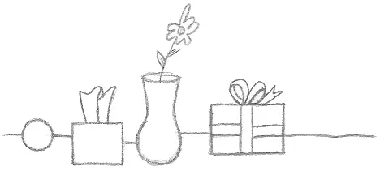
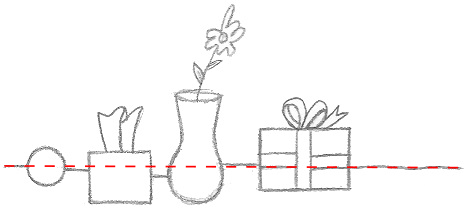
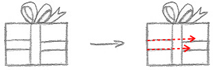
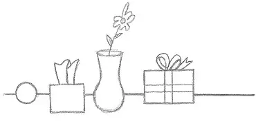

Esta es una breve lección sobre la importancia de prestar mucha atención a lo que estás dibujando y cómo evitar errores comunes. El formato de esta lección es: preguntas, respuestas y soluciones. Intenta adivinar qué falla en cada uno de los ejemplos a continuación. Estos ejemplos se basan en algunos errores comunes que veo con frecuencia. Su objetivo es que reflexiones más críticamente sobre tu propio trabajo.
Un gran error que cometen los principiantes es no prestar suficiente atención al flujo de líneas en sus dibujos. ¿Puedes identificar los errores con los ejemplos a continuación?
¿Qué le pasa a esta escena?
La superficie de la mesa y la cinta horizontal no están rectas. Si usas una regla para comprobar la alineación, notarás que están muy torcidas.
 Dibuje suavemente primero la mesa y luego los objetos.
Para el regalo, dibuja ambos listones en su totalidad, sin pensar en cuál está arriba o abajo. Luego, borra las líneas que no necesites. Otra solución es utilizar una regla para no tener que dibujar una línea continua a través de todos los objetos sobre la mesa.
